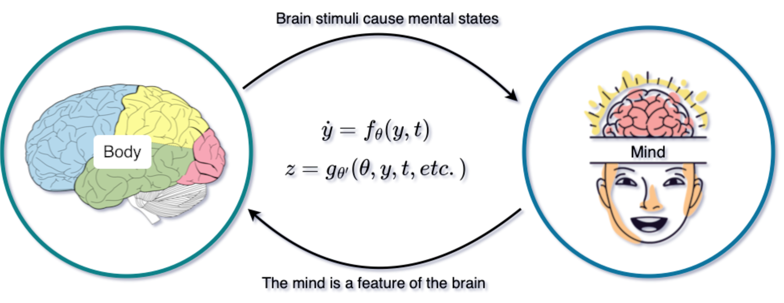

How do we fit our conception of ourselves (the human reality) with what the world is at its most fundamental level: physical particles and fields of forces ?
I’ve always been fascinated by theories of the mind and how to fully replicate it with artificial general intelligence. Lately, the philosophical nature of this problem is one that I’ve found myself pondering over a lot. Hoping not to get into too much detail, I’ll talk about two technologies I believe are key to deciphering how the human mind works: Neural Ordinary Differential Equations, and Time-Parallel Computing. This article is based on ideas I collected from John Searle’s course Philosophy of Mind, and Malcolm Gladwell’s best-selling book Blink.
1 The mind-body problem
The mysteries of consciousness and the soul are some of the most challenging questions of our time. To tackle these questions, the Cartesian view postulates the existence of two realms: a real of Mind (whose essence is the “thinking”), and a real of Body (or the physical)1. The mind is indivisible, undoubtable (hence the famous phrase “I think, therefore I am.”), and commands the body. This fomulation, whose ideas we carry to this day, is an apt introduction to the dualist view, despite being a gross oversimplification of René Descartes’ legacy.
The dualist formulation dated back to the 17th century and is convenient for its time, as it leaves the realm of Body to science, and the realm of Mind to religion. Perfect if you’re a scientist trying to conduct thought-provoking research under the Inquisition. Descartes’s theory is appealing, but it leaves us with one big problem: how does the mind influence the brain? How are the two realms connected? Descartes’s answer to this Mind-Body puzzle was unconvincing.
Over the centuries, several schools of thought have sought an answer to the puzzle, at times only considering one of the two realms. The main groups being idealism and behaviourism for Mind and Body, respectively. This is beautifully explained by John Searle in his course Philosophy of Mind. It would appear that the advent of computers and the emergence of the cross-disciplinary field of cognitive science is the key to this puzzle.
2 The bottom-up mind-body causality
Computers function by means of algorithms: carefully established instructions relating an input to an output. If one were to think of the brain (and daringly the mind too) as a computer, then the causal relation between the brain and the mind would have to be at the heart of such formalism. That is the essence of cognitive science.
When you feel pain, hunger or joy, there’s no doubt these are neurobiological processes in your brain firing. This suggests that the mind reacts to the behaviour of the world; it is caused by brain processes. On the other hand, when you decide to raise your hand and it goes up, or when you go from being unhappy to being ecstatic, neuroscientists can clearly observe a change in the physical disposition of your brain. In other words, your mind is a state of your brain, a feature.
As explained by Searle, the brain causes the mind, and the mind is a feature of the brain. This would appear paradoxical, but no, it isn’t. It makes sense if we think of the mind as made up of the higher-level processes compared to what we measure in the brain. For instance, when you decide to raise your hand and it goes up, there are two ways to interpret what happened: (1) neurons activated somewhere in your brain, sent a signal that travelled to your muscles, then causing your hand to go up (the low-level processes); (2) you had a thought, and you observed the materialisation of it as a hand in the air (the high-level process). Both interpretations are equally and simultaneously true.
How do higher-level systemic features emerge from low-level individual characteristics? This is the research question we’ve been after. We’ve turned an abstract philosophical puzzle into a very materialistic one; a scientific problem that includes the mind (unlike Descartes’ original formulation). Mind-blowing behaviour emerging from simplistic elementary processes is widespread in nature. My favourite example is the swirl of Starling birds.
This idea isn’t particularly groundbreaking. I’ve recently heard, on the Joy of Why podcast, about Professor Anil Seth and his pursuit of similar research questions at the University of Sussex.
3 A new model for the mind and the brain
As an applied mathematician, the propagation of brain signals and the elusive bottom-up causality between low- and high-level processes remind me of two specific tools: differential equations and neural networks. I liken the causality and evolutionary nature of brain processes to ordinary differential equations (ODEs) as they describe individual dynamics. I then ascribe the compositionality of simple behaviour into larger features — difficult to account for with our current understanding of neuroscience — to deep neural networks.
As it turns out, those two concepts have been merged in what is now known as Neural ODEs. Our model for the mind-body relation is formulated as follows \[\begin{align} \frac{\text{d} y}{\text{d} t}(t) &= f_{\theta}(y,t) \qquad t \in ]t_0, t_f [ \\ y(t_0) &= y_0 \\ z(t) &= g_{\theta'}(\theta, y, y_0, t, t_0, t_f), \end{align}\] where \(y\) represents the physical signal transported and processed inside the brain. The transformative function \(f_{\theta}\) — where the learnable parameters \(\theta\) indicate a deep neural network2 — dictates how such continuous processing occurs. The mysterious readout function \(g_{\theta'}\) tells us how a brain stimulus \(y_0\in \mathbb{R}^b\) turns into a global mind feature \(z \in \mathbb{R}^m\) (with \(m\gg b\), i.e. potentially lots more elements involved in forming a mind compared to processing an elementary brain signal).

The Neural ODE paradigm has found breathtaking success, particularly as a drop-in replacement for ResNets. But neural networks today can grow to extremely large sizes with billions of parameters in the weights \(\theta\). They are energy and computationally inefficient compared to the human brain from which they are inspired. What if this network didn’t have a fixed structure? What if neurons could dynamically adapt to the task at hand? These are the questions that Liquid Neural Networks attempt to answer. They were inspired by the efficiency of the worm’s brain, made up of merely 300 neurons; and have shown jaw-dropping performance in autonomous driving. I believe Neural ODEs and Liquid Neural Networks could be combined within a Liquid Neural ODE paradigm, thus unlocking the secrets of consciousness.
4 Accounting for the subconscious
As a full-time daydreamer, I believe any theory of the mind must account for the subconscious; although not necessarily as envisioned by Sigmund Freud, since I don’t believe his deeply abstract (and quite frightening) but brillant ideas are indispensable to replicating the human mind. That is why I think there’s a second computer at work in the back of our minds, even when we are awake. The same computer that quickly processes information and lets a car driver avoid pedestrians in an emergency situation. The kind of computer that shows us how we’re all carrying implicit biases. The same one we make use of on first impressions. The computer in the background that professionals use to identify talent without even knowing such things are happening subconsciously.
If those ideas sound familiar, that’s because they are collected from Malcolm Gladwell’s bestselling book Blink. Gladwell repeatedly uses the terminology thin slicing. He describes a computer that, given sufficient experience in a domain, discards all useless information to make the quickest decisions for our assumed benefit. The moral of the book is: listen to your inner voice, but know when to ignore it. Besides the discarding of useless information, I believe thin slicing happens so quickly because of the superior computational performance of that second computer.
So, how can this idea complement the Neural ODE (which represents the conscious mind in our model)? Well, we parallelise it. The model above, given an heterogenous input vector \(y\), should split the time-horizon \(]t_0, t_f[\) and distribute the chunks to much smaller units of compute in order to return faster results at competitive accuracy. This can be achieved if two time domains are considered, one coarse on which guesses for \(y\) and \(z\) are refined, and one fine on which brain units work in parallel. We can interpret this parallelisation as signals coming from various senses at different times, and processed by different units within the brain. What I’m describing is combined data- and time-parallelisation. We train the Neural ODE on a fine time domain with a large \(y\) containing all possible information, but under subconscious thin slicing conditions, we make sure inference happens on the coarse time domain with a smaller less informative \(y\) in successive stages.
Several works have investigated parallel ideas on Neural ODEs, namely Gunther et al.’s and Massaroli et al.’s. However, they only considered time (or layer) parallelism. Moreover, they focus on the training, and show very limited interest for inference. Combining data and time for quick but accurate inference is a dream I hope to achieve before then end of my PhD in September 2025.
5 Closing thoughts
I’m currently investigating the feasibility of a data-time parallel Neural ODE with applications to PDE simulation. How would we test such an idea on the brain? I have no clue yet. What I know is that I can start with my brain, like in the famous Chinese Room argument3 (as Searle says, “always test the theory on yourself first”).
If your mind finds itself drawn to these ideas, then maybe they’re valid. In that case, send me a message. If you’ve heard these same ideas somewhere else and think I’m wasting my time or that there’s room for collaboration, then please do reach out. If this sounds like complete nonsense to you, then maybe it is. It shouldn’t stop us from pursuing the truth though, right ?
Using your GitHub account, please comment below for any insights you might have. And as always, thanks for reading !
Footnotes
This is the best I can do the define what the mind is, as opposed to what the body is. In this article, the body is reduced to the brain without loss of generality.↩︎
In this model, \(\theta\) is optional in cases where neurobiological input-output relations are fully understood. \(\theta'\) on the other hand, is not optional.↩︎
While it concedes the idea of a computational brain, this argument proves computation alone cannot explain the mind. In our model, we account for that with our readout function \(g_{\theta'}\).↩︎